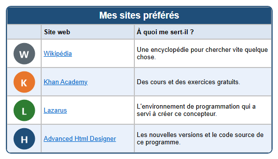

Parcours d'apprentissage › Leçon 6
Hyperliens

Qu'est-ce qu'un hyperlien ?
Un hyperlien (ou simplement lien) est un texte ou une image sur lequel on peut cliquer. Derrière le lien se trouve une
adresse (URL), par exemple https://fr.wikipedia.org. Dans le navigateur, un lien texte est généralement bleu et
souligné.
Deux sortes de liens
- Hyperlien texte : cliquez sur la cellule puis, dans l'onglet
 Cellule (C), sur
Cellule (C), sur
 TH+. Deux questions suivent : d'abord l'adresse (URL),
puis le texte affiché comme lien (par défaut le texte déjà présent dans la cellule).
TH+. Deux questions suivent : d'abord l'adresse (URL),
puis le texte affiché comme lien (par défaut le texte déjà présent dans la cellule).
 TH- retire le lien ; le texte reste.
TH- retire le lien ; le texte reste. - Hyperlien image : cliquez sur une cellule contenant une image puis sur
 HL+ (Créer un hyperlien image). Tapez l'adresse.
HL+ (Créer un hyperlien image). Tapez l'adresse.
 HL- retire le lien.
HL- retire le lien.
https:// devant. Copiez-la
de préférence depuis la barre d'adresse de votre navigateur : vous éviterez les fautes de frappe.À vous de jouer
- Créez un tableau de 3 colonnes et 6 lignes, avec un titre et les intitulés Site web et À quoi me sert-il ?
- Tapez les noms des sites dans la deuxième colonne et leur utilité dans la troisième.
- Transformez chaque nom en hyperlien texte avec TH+.
- Placez un bouton dans la première colonne avec Ajouter une image (par ex.
knop-w.pngdu dossierlessen\afbeeldingen) et faites-en un hyperlien image avec HL+. - Testez vos liens : cliquez en bas sur Cliquez ici pour des fonctions supplémentaires, ouvrez le navigateur de test et cliquez sur chaque lien.
Dans les coulisses
Dans le code HTML, un lien est un élément <a>. L'adresse se trouve dans href :
<a href="https://fr.wikipedia.org">Wikipédia</a>Pour un hyperlien image, l'élément <img> se trouve entre <a> et </a>.
Exercice
Ajoutez en bas une ligne avec un site que vous utilisez souvent (par exemple le site de votre école ou de votre club de sport). Rendez cliquables le nom et le bouton, puis testez le lien.
Solution
Dans l'onglet Tableau, cliquez sur AR. Tapez le nom et l'explication dans la nouvelle ligne. Cliquez sur la cellule du nom puis sur TH+ ; collez l'adresse depuis votre navigateur et confirmez le texte. Dans la première colonne, choisissez un bouton avec Ajouter une image, cliquez sur HL+ et collez la même adresse. Ouvrez le navigateur de test et cliquez sur les deux liens.
Vous travaillez sous Linux ? Ouvrez alors l'exemple vous-même avec Ouvrir le concepteur de tableau : dossier
lessen/fr, fichier les06-websites.htd.